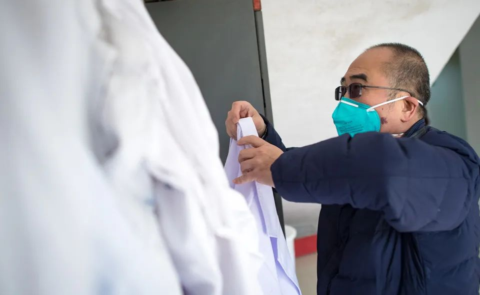

封面报道|四大ICU主任详解病毒 来自最前线的防治之策
原文链接 备份链接 “彭主任，急诊室一个31岁的新冠肺炎病人心脏骤停了，您快来看看，要不要转入ICU。” 2月4日晚上7点半，武汉大学中南医院重症医学科（ICU）主任彭志勇刚从湖北天门考察疫情回到办公室，和财新记者聊了不到十分钟，就 …

 *************▲************* 2020年2月22日晚，武汉市金银潭医院，医护夫妇涂盛锦(左)和曹珊“以车为家”。 （新华社/图）
*************▲************* 2020年2月22日晚，武汉市金银潭医院，医护夫妇涂盛锦(左)和曹珊“以车为家”。 （新华社/图）
全文共10527字，阅读大约需要22分钟。
这里发生的许多事都早于武汉市区，他们最早收治新冠肺炎的重症患者，最早腾空自己的病区，最早进驻了外援，也最早面对“救一个死一个”的危重症之险。
金银潭在2019年12月30日至少接收到了27名病人。以同济医院呼吸与重症科主任赵建平为首的28位武汉医学专家在金银潭会诊了这27名病人，其中13名重症。
由于缺少最重要的病原学支持，五位专家并未就老王是否死于病毒性肺炎达成一致，这或是其未成为官方通报第一例死亡患者的原因。
本文首发于南方周末 未经授权 不得转载
文 | 南方周末特派记者 杨楠 发自武汉
南方周末实习生 何沛芸
责任编辑 | 吴筱羽 何海宁
你很容易在金银潭医院迷路。院区外建筑物稀落，若是走岔到院内小路上，周围就只有树丛与草地。2月中武汉落雪，融雪成冰，从腊梅与松树的枝丫上滴滴答答落成了雨声。偶尔，你还能看到灰喜鹊，这是一种灰背蓝尾的小胖鸟，只在环境好的地方出现。
这里是武汉市突发公共卫生事件医疗救治定点医院，一所远离武汉市区的传染病医院，也是肝病等慢性病患者康复的疗养地。
作为一所传染病医院，金银潭有能力最快启动处置传染病的防护机制，但作为一所专科医院，它自身的能力不足以面对此后接连涌入的危重症患者。
从2019年12月开始，金银潭成为新冠肺炎疫情的暴风之眼。这里发生的许多事都早于武汉市区，他们最早收治新冠肺炎的重症患者，最早腾空自己的病区，最早进驻了外援，也最早面对“救一个死一个”的危重症之险。
今天的金银潭不同于往日。来自全国最精锐的医疗力量重新组成了金银潭，而金银潭是重组武汉新冠肺炎疫情全貌最重要的一块拼图。

2020年1月29日，武汉市金银潭医院，医院院长张定宇换装投入工作”。（新华社/图）
1
12月30日发生了很多事，这成为公众所知的武汉疫情第一个关键日。
最初，病人不是一个个地来，他们一批被送往金银潭。
2019年12月29日19:00，金银潭ICU（重症病房）的护士江苇接到了9名不明原因肺炎的患者。他们是同一批，被两辆车从不同的医院接来金银潭。这其中，一位跟着转院患者过来的家属，急切地告诉医生自己也有发热症状，或许被传染。他最终也被收入金银潭住院。
位于南七楼的ICU在两个小时前突然接到通知，要求原有14名病人转出，空出全部16个床位，整病区消毒，医护人员启用最高级别的三级防护。金银潭对三级防护是熟悉的，他们在2019年的军运会前做过针对中东呼吸综合征——一种类SARS的冠状病毒引起的传染病——的演习。“一模一样的最高防护。”江苇说。
就在几个小时前，湖北省新华医院和武汉市中心医院公共卫生科向湖北省、武汉市卫健委疾控处报告了接诊数名“不明原因病毒性”肺炎患者。这天下午，省、市两级卫健委疾控处通知省、市、区三级疾控中心，上述两医院收治多名有华南海鲜市场暴露史的不明原因肺炎患者，要求启动应急处置工作流程，同时，金银潭和两级疾控中心开始流行病学调查。
当晚，金银潭的业务副院长黄朝林带人从新华医院接走6位病人，华科大附属同济医院亦有1名不明原因肺炎患者转入金银潭。基于传染病的处置方法，这些病人无论病情轻重，都只能被送入已经被隔离起来的ICU。
第二天，12月30日发生了很多事，这成为公众所知的武汉疫情第一个关键日。
这天，院长张定宇牵头收集了最早收治的7名病人的支气管肺泡灌洗液，并送往中科院武汉病毒所进行检测，这是人类认识不明原因肺炎的关键一步。三天后，研究所确定了新型冠状病毒的全基因组序列，并在2020年1月5日成功分离到了病毒毒株。
南四楼被紧急改造成隔离病房，封闭缓冲间，所有通道改成单向通道，这本是一个新装修完毕，准备接收流感患者（当月金银潭收治了大量流感患者）的普通病区。接下来一段时间，金银潭几乎每天都新开一个病区，以容纳从市内各院转院而来的患者。
金银潭在12月30日至少接收到了27名病人。以同济医院呼吸与重症科主任赵建平为首的28位武汉医学专家在金银潭会诊了这27名病人，其中13名重症。此后赵建平担任湖北省医疗救治组组长，牵头制定湖北省的新冠肺炎治疗方案。
这天下午四点，南四楼的52张床位开始接收不明原因肺炎病患。护士长刘萍和三个护士熬了一夜，收了大约十五个病人。当丈夫送衣服来医院时，刘萍站在医院大门口冲着丈夫哭：“我感觉事情没说的那么简单。”
“虽然我也不知道是什么病，可我看到了很多人的片子都是白肺。SARS我虽然没经历过，但多少也了解一点。”情绪糅杂，她想到医护人员或许会有危险了。
刘萍收治病人时，武汉市中心医院眼科医生李文亮在微信同学群中发了消息：“华南水果海鲜市场确诊了7例SARS，在我们医院急诊科隔离”。后来，李文亮因收治一名感染新冠肺炎的青光眼患者而出现发热和呼吸困难，于1月31日确诊新冠肺炎，6日后医治无效离世。
也是在金银潭南四楼开始接收不明原因肺炎的同一时间，12月30日16:00，武汉市卫健委应该已经收到全武汉医院上报的所有病例——两份红头文件《关于做好不明原因肺炎救治工作的紧急通知》和《市卫生健康委关于报送不明原因肺炎救治情况的紧急通知》下达各医疗机构，要求各医院清查统计最近一周接诊过的，有类似特点的不明原因肺炎患者，12月30日16:00是文件中要求上报的时间。三级疾控中心形成《关于医院报告华南海鲜市场多例肺炎病例情况的调查处置报告》。
回过头看，12月30日，各方对不明原因肺炎的响应速度之快与后续疫情一度失控产生鲜明的对比：许多人已经站在了警铃的面前，但为何警报没有拉响？
2
1月9日，老曾成为官方通报的首位死者，但他并不是第一个死在金银潭的病人。两日前，67岁的老王在金银潭离世。
老曾是官方披露的第一位死于不明原因肺炎的病人。
老曾送进ICU的时候已经不行了。二十天前，他发热、咳嗽、食欲衰退。辗转过街道医院和二甲医院都没有改善，呼吸困难四天后，他在2019年12月31日深夜插着管，带着呼吸机转入金银潭ICU。
他今年61岁，常年在华南海鲜批发市场采购货物，患有慢性肝病和腹部粘液瘤。
金银潭已经进驻了来自国家卫健委和武汉市的专家，他们对ICU的每一个病例举行会诊。老曾入院第二天，专家组判断他的病情处于极期，救命为主。ECMO治疗为目前可用手段，争取条件进行ECMO治疗。ECMO是体外生命支持的最强手段，可以暂时替代患者的心肺功能，为患者争取到心肺康复的时间。
但ECMO不能支持心肺之外的器官，患者的心肺必须要能自愈。
1月1日深夜，老曾被上了ECMO，他是此次疫情中第一个被使用ECMO抢救的病人。事实上，医生们都知道老曾的多器官衰竭难以逆转，随时可能死亡。在ECMO转着的日子里，老曾出现了双侧瞳孔散大，双肺呼吸音极弱，几次濒危，都靠着急救手段拉了回来。
中南医院一位参与新冠肺炎救治的医生透露，他们在1月初就知道不明原因肺炎会死人，“金银潭有个病人已经不行了，只是一直拿ECMO转着”。
1月9日，老曾成为官方通报的首位死者，但他并不是第一个死在金银潭的病人。两日前，67岁的老王在金银潭离世。
老王曾在协和肿瘤医院和协和医院接受治疗，两次转院之间的一周里，他的肺从部分感染变成全白。他的妹妹、女儿、女婿，也陆续出现了与他类似的症状。协和医院曾组织呼吸科专家会诊，并给老王插管抢救，无明显改善，建议送往金银潭救治。
1月7日，在被送入金银潭3日后，老王因“重度肺炎”去世。医生告诉家属，他是这场疫情中第一个死去的患者。
老王死亡当日，五位专家针对他死因的讨论出现了分歧。有三位专家的意见是不明原因肺炎合并细菌性肺炎——病毒性肺炎合并细菌感染是一种临床上的常见现象。有两位专家认为是细菌性肺炎，或认为其临床和影像学表现像病毒性肺炎，但无病原学，可排除。最终主持人小结为：重度肺炎，合并急性呼吸窘迫综合征、感染性休克等并发症，并伴有原发性高血压。
彼时，国家疾控中心尚未向武汉提供PCR核酸检测试剂盒，无法确定老王的病因。老王去世后，曾有专家与其女儿沟通能否进行遗体解剖，但最终未成。
由于缺少最重要的病原学支持，五位专家并未就老王是否死于病毒性肺炎达成一致，这或是其未成为官方通报第一例死亡患者的原因。
老曾的情况不一样，他是被“选中的样本”。
转入金银潭的第二天，他被采集了肺泡灌洗液样本送去检测。1月27日发表于《中华医学杂志（英文版）》的论文《鉴定一种新型冠状病毒导致人类严重肺炎：一项描述性研究》显示，作为采集样本之一的老曾感染了新型冠状病毒。
从2019年最后一天开始，金银潭南七楼ICU正式收治他们的第一批病人。此后9天，ICU共接收了9名转院而来的不明原因肺炎重症患者。每位患者都经历了七到八项核酸检测，包括甲流、乙流、军团菌肺炎、登革热、腺病毒等，以确认其是否患有某种人类已知的病毒性传染病。检测结果显示，ICU收治的所有病人，体内存在的是人类未知的病毒。
那时，还没有人知道这种未知病毒会带来多少死亡。在金银潭ICU工作了11年的医生张巍看着病人的CT，觉得和H7N9禽流感很像。他以为这不过是一场来势汹汹，但伤亡范围极小的疫情。
“刚开始接触这些病人，我觉得这有什么，不就是一般的禽流感么？但是后来……”
张巍报出了四个名字，他们一个接一个地死亡。他不愿意回忆那段日子：“太灰色，听不到好消息。”
根据卫健部门通报数据，截至3月5日，武汉市有2305人死于新冠肺炎。而在2020年年初，就像武汉医院的门诊还未意识到新冠病毒的传染性之剧烈，金银潭也尚未意识到新冠肺炎的危重病人是多么残酷。
3
从12月31日到1月8日，金银潭ICU收入的9名不明原因肺炎病人均不幸离世。生命被支撑最久的病人，在ICU里待了22天。
南方周末记者请赵建平为本次疫情的发展拉一条时间轴，他将第一个时间点划在12月30日——他首次参与会诊金银潭。第二个关键节点是1月10日，“当天病人明显多了，那时候开始出现医务人员感染。”
专家会诊的结果之一是，从1月1日起，金银潭都有各级专家值班会诊，武汉市卫健委抽调了武汉市第二医院、第三医院、第四医院、武昌医院等医院的医务人员前来支援。
即使这样，在1月上旬的金银潭，多位医护均表示不清楚这到底是一个什么样的疫情。武汉市卫健委认为不明原因肺炎不存在“人传人”，但“人传人”的猜测已在金银潭内流传。
ICU主任吴文娟再三向科室强调，一定要做好自我防护。“病人越来越多，我们慢慢就意识到这个病真的跟以前是不一样的。以前只会告诉我们做好防护，没有那么认真地和我们说。”ICU护士江苇回忆说。
在赵建平划出的第二个时间节点1月10日上，中南医院ICU的16张病床在那天住满；某个三甲医院急救中心每天需要住院的急重症病人达30-50人。而金银潭已经收满了至少五个非ICU病区，每个病区有四十多名病人。这天，金银潭将ICU之外的病人分成轻症和重症两类，分类安置病房。
1月5日8:00至1月10日，武汉市卫健委未有通报不明原因肺炎感染人数。此后，1月11日至1月17日，湖北省两会在武汉召开，连续七日，武汉市卫健委通报不明原因肺炎患者无新增。
而市郊的金银潭ICU内，却忙得一个人当四个人用。病人多，病情重，护士们接连给他们上呼吸机，上CRRT（连续肾脏替代疗法），上ECMO。ICU内的机器增加了大约二十台，以前一个护士管一台CRRT，现在一度出现一个人管四台。
每个病人需要高压氧的持续供应，医院原有的氧源不够，需要氧气罐补给。一个氧气罐只能用一小时不到，送氧师傅赶不过来，护士们就自己去搬比人还高的氧气罐。连续工作到1月下旬时，有个护士在晚上搬氧气罐的途中晕倒，护士长坚持让她休息三天，可她只休息了一天，因为人手不够。疫情至今，ICU内先后有两位怀孕的护士，担心在疫情中拍CT或是喝中药影响了胎儿，选择打掉了孩子。
一个月的时间里，金银潭全院3栋楼21层病区，全部用于收治新冠肺炎病人。其中，四个普通病区被改造成ICU病区。
另一边，ICU医生张巍感到挫败，这些病人“很特殊，和以前的H7N9、H1N1病人有很大不同。我们花了很大的精力，付出了极大的辛苦和努力，但这些病人大多数都没好”。
多个信源向南方周末记者确证，从12月31日到1月8日，金银潭ICU收入的9名不明原因肺炎病人均不幸离世。生命被支撑最久的病人，在ICU里待了22天。
4
1月初，武汉市卫健委已经给出一种支援金银潭的方案：七家医疗能力较强的医院各出三个专家，带着本院的ICU护士，以一周为周期，在金银潭轮流值班。
1月中旬的金银潭宛如一座孤岛。
谈起那段日子，张巍总是目光游移，试图忘记；江苇语气急促，忧心忡忡；蔡艳萍则使劲儿用脚尖在地面上打转儿，不知道该不该把心里的苦闷说出口。
蔡艳萍是感染二科的副主任医生。她所在的综合楼四楼在1月中上旬被要求不再接收流感病人。流感病人的出院周期一般为五天，病房里的多数病人都将出院，少数病人被转院至市卫健委的指定医院，继续接受治疗。
1月20日，蔡艳萍所在病区清空，接收新冠肺炎病人——1月12日，在向世卫组织提交新冠病毒基因序列后一天，武汉市卫健委将不明原因肺炎改称新型冠状病毒感染引起的肺炎（下称“新冠肺炎”）。
病区清空后，蔡艳萍所在科室首先支援已经开成新冠肺炎病区的综合一楼。她并不知道当时武汉疫情正在怎样发展，“我们没有门诊，就看不到特别混乱的局面”。
实话说，蔡艳萍并不感到体力上的辛苦，“12月份收流感也很忙的，基本上就不能休息”，更大的折磨来自精神压力。1月上旬，她首先在与一位同济医院医生的通话中，得知同济医院的门诊已经涌满了发热病人，“如果门诊有那么多病人，住院的病人肯定不会少”。
然后她不断接到亲友、老同学、老病人的电话，询问她能不能来金银潭看病，向她倾诉内心的忧虑。
她逐渐发现微信是不能看的，无论朋友圈还是公众号，都充斥悲伤甚至惨烈的消息：无法出门，无法看病，无法住院，无法生还。
甚至她最好的闺蜜，在春节前后询问她，父亲感染了，是否能进金银潭住院，她都无能为力。彼时入院金银潭的硬性标准是核酸检测为阳性，而闺蜜的父亲迟迟排不上核酸检测。“如果她父亲晚两周……确诊标准改了，或许就有办法。”闺蜜没有主动告诉她的消息是，父亲最终在家中去世。
蔡艳萍所不知道的是，在她的病区之外的会议室里，国家和省市各级医学专家每日都在讨论判别和诊断的标准，《不明原因的病毒性肺炎诊疗方案（试行）》和《新型冠状病毒感染的肺炎诊疗方案（试行）》（即第一版诊疗方案），都是主要基于金银潭的几百个病例讨论出的结果。
在1月16日发布的第一版诊疗方案中，对治疗指出“危重病例应尽早收入ICU治疗。”但后续的疫情救治并没有能按照科学的指导进行，武汉大量的病患因延误治疗，陷入无计可施的危重症。
1月初，武汉市卫健委已经给出一种支援金银潭的方案：七家医疗能力较强的医院各出三个专家，带着本院的ICU护士，以一周为周期，在金银潭轮流值班。
但疫情的进展让这个安排仅仅轮转了一次就失效。患者人数从1月10日起爆发式增长。1月11日，同济医院最先抽调钟强和另外四个医护人员，带着医疗设备支援金银潭。四日后，省卫健委要求同济医院、省人民医院、协和医院，分别接管金银潭的南七楼、南六楼、南五楼。这三层楼随后全部改造成重症ICU病房，同时市级医院抽调人手前来支援。
1月19日，省人民医院提出，希望湖北省内组建专门的ICU重症团队支援金银潭。五日后，国家卫健委开始抽调各地医疗力量接连进驻。
“有人来了，还来蛮多，我们真的就觉得好有依靠感了，觉得安全一些了。”蔡艳萍说。金银潭的医护人员已经做出了他们所能做的一切，但仍远不能抵御疫情的扩展。
5
他一点儿也不悲观，直到去了金银潭。
对新冠肺炎危重症的认识就像是照进黑暗洞穴的手电筒光束：让你看见疫情最危险的一角，视野有限，却足以令人坠入黑暗。
同济医院急诊与危重症科副主任钟强是最早在金银潭支援的专家，值班一周后，他得知与自己搭档的金银潭ICU主任吴文娟肺部CT显示感染。他回同济医院也拍了个CT，同样显示轻微感染。
房明浩来接钟强的班。他是山东人，胆大性直，语速和他脑子转动的速度一样快。身为同济医院的急诊与重症医学科副主任，年初时钟强临危受命管理同济医院的发热门诊。那会儿他每天在医院奔波，四处灭火，微信步数从八九千涨到一万六，也没觉得这事儿有多严重，“当时就是觉得发热病人明显多了，搞不好就是甲流那样，一下就过去了。”
那时候他并不悲观，直到去了金银潭。
刚到的那会儿，他进病房调呼吸机参数，说：“就没有我降不下来的二氧化碳。”新冠肺炎的危重症病人比一般肺炎病人更早出现二氧化碳潴留，这意味着他们体内因为呼吸不畅缺少氧气后，二氧化碳增加、堆积，影响体内细胞正常的代谢和气体交换。通常来说，调节呼吸机的参数——比如调高呼吸频率，又或者深度镇静完全靠呼吸机给氧——能够一定程度改善这样的情况。但这次，包括房明浩在内的多数重症专家都表示：患者体内的二氧化碳降不下来。
房明浩走出病房，说自己“服了”。“到了金银潭才彻底地服了，终于知道这个病有多么重了。我搞重症二十多年从来没见过病人这么重这么诡异。”他说。
“难，非常难”，至少有十位身在武汉，来自全国各地的重症科或呼吸科专家这样描述新冠肺炎的危重症病人。这既有科学上的难题，也有救治条件上的困难。
金银潭首先被指定为新冠肺炎收治医院，其后是肺科医院。以金银潭为例，它的ICU力量薄弱，只有五位医生，全院的各类氧疗仪器加起来不过二十台。1月21日，房明浩接手南七楼ICU的第一天，“班上不下去。”他形容道。
ICU只剩下两个本科室医生：张巍和涂超，另外三名医生都处在病休。还有两个紧急调来的艾滋病科医生，两个人都迷迷瞪瞪的，诚恳地说“我们会开医嘱，但不会看（这类）病人”，房明浩回忆。这是此次各方医疗力量支援疫情的一个普遍现象，非呼吸科或急诊重症科的医生，在疫情中间更多是起到补充人手的作用。
接手次日，房明浩与国家卫健委专家组专家杜斌、童朝晖和邱海波一同查房。这三位特派的重症科或呼吸科大专家在四天前抵达武汉，每天都进ICU查房。
查房从早上八点开始，先用一个多小时过一遍所有病人的病历，再换防护服进病区。“每个病人查了很久很久，出来之后就说，这样不行，14个病人，如果就一个医生查下来，根本管不过来。因为病人太重，你要知道那时候重到什么程度，14个病人一天死5个都有可能。”房明浩说。
ICU的救治难度不看病人数量，是取决于病人的危重。“这些病人别说在金银潭的医疗条件，即使以前在我们同济医院的ICU也没有这么重，这里还是14个人都这么重。”房明浩说。
这14个病人的生命体征极其不稳定，可能上一小时看着还不错，下一小时就要抢救。升压药物要怎么用，呼吸机怎么调整，液体的出量入量如何平衡，需不需要引流，需不需要抗凝，每天要拍胸片、抽血查生化、做几次血气分析、做几次口腔护理等等，这需要医生对病人有透彻的了解，每时每刻都密切观察。就算在平时，救治两个ICU病人，就可能让一个医生忙得回不了家。
现实是，当时病区里只有3名真正的ICU医生。面对14个病人，医生进去查房一圈，出来可能就得忘记几个病人的事——在传染病房，你不能带任何东西进去，只能凭借大脑记忆。即使记忆力卓越，医生也无法分身对每个病人都制定出足够完善的治疗方案。
查房结束的当天下午，三位大专家坐在金银潭ICU里决定，要向国家卫健委申请，再派一些专家进驻金银潭。至少一个病房增加两个专家，一个人管六七个，手下再有三到四个医生做临床救治。
次日，1月23日，北京宣武医院重症医学科主任姜利和上海中山医院重症医学科副主任钟鸣，都接到了立刻奔赴武汉的通知。
6
“怎么样是错误的治疗方案？”
“没有救过来。”钟鸣说。
金银潭将南六楼也改造成了ICU。姜利来此一个月，慢慢明白能坚持活下来的病人走过了一条怎样的路线。
“最初，那些低氧患者就像一个人往悬崖上走，路一直是平的，向前走的时候他看不到悬崖，医生也看不到。等医生反应过来，他一只脚已经掉下去了。”姜利说。
二十天，接触了最多死亡病例的医生们终于能看清前面多远是悬崖，知道再这么走会掉下去。“但只是了解它的发生、发展，还没能够学会迅速阻断某个环节的进展。作为医生，我们目前只能监控着他往前走，判断他快要掉下去的时候，把他往上托一托，看看能不能托住，也许有些人就托住了。”姜利说。
在南六楼，钟鸣僵持最久的一个病人，插管时间超过一个月。在钟鸣看来，无创呼吸的病人还需依靠自身努力，上了有创呼吸的病人就完全在医生手上。
在新冠肺炎的病情中，肌体与病毒的战役三周定生死。“理论上，这个病人已经在和病毒的斗争中生存下来了，但是之前的打击对他太大了。”钟鸣说。
钟鸣不愿说得过于详细，但他透露如今这个时候，在金银潭的ICU，有很多现实的问题阻碍了病人的恢复，“跟我们平时在病房里进入康复的病人是不一样的。”
可能是人手的不足。南六层二十多个病床，医护人员加起来约四十人，而ICU的标准医护比为0.5-1个医生和3个护士对一个病人。也可能是因为防护仍不够到位，除了南七楼ICU，金银潭新增的另外四个ICU病区，每个病区只配有两个正压呼吸式头套。面对这样的烈性传染病，没有足够强力的防护装备，医护人员无法被保障全然安全地进行吸痰等近距离护理。
接受采访时，钟鸣并不知道这位插管超过一个月的病人是否能够康复。新冠病毒除了对肺部攻击，还会对心脏和肾脏造成影响，若是有基础疾病或年岁已高，则会引起全身多器官衰竭。
你能感觉到钟鸣的急迫。中山医院的同事说他偏爱完美，做事拼命。ICU医生不惮面对死亡，对他们造成冲击的是意料之外的死亡。“有大量病人在短时间内离去，每一个病人的离去，我们都直接或者间接目睹了一个家庭的悲剧，其实这个对我们的打击比任何时候都要大。我们也算是身经百战，见惯生死，但这次真的不太一样。”钟鸣说。
采访中，不同医院的医生描述过相似的突然死亡：上午还是清醒的，晚上突然去世；一个晚上去世四个病人，一边抢救一边目睹下一个的死亡；医生查房结束，认为一切都好，脱下防护服时，身后一台心电监护仪直了。
对于有些危重症患者来说，死亡不是一个缓慢的过程，可能只是一瞬间。有时候感觉突然被卡住了喉咙，再也喘不上最后一口气，有时候突然陷入昏迷，不同器官上受伤细胞再也无法坚持工作，在临界点崩塌。
一瞬间死亡，这不是ICU医生允许发生的事情。他们希望自己明确地知道每个病人在每个病情阶段应该怎么处理，然后尽量托住。我们从侧面获知，姜利和钟鸣初期接手的二十余名病人，没有一位康复。
姜利和钟鸣都记得每一个病人。“这些病人给我印象都很深，让我知道我要重新学习，重新开始，过去的经验可能都不管用。我对每个病人都要非常谨慎小心，因为它可能完全不在你的掌控之中。我不再像以前一样，能给出每个病人非常正确的治疗方法。”钟鸣说。
“治疗方法会有对错之分吗？”
“会。你不知道正确与否，都有可能是错误的。”钟鸣说。比如结束无创开启有创的时间点，可能就会出错。
“怎么样是错误的治疗方案？”
“没有救过来。”钟鸣说。
坦白说，早期送到金银潭ICU的病人往往让医生感到被动。因为延误治疗，病人送至金银潭时，病程已经加速，进入末期。“金银潭床位开放，别的都想把重症转过来，在运转途中你一个氧气跟不上，一到金银潭就重了，就是神仙他也没有什么好办法。”一位ICU医生说。另一位医生则直接形容疫情前期，转院金银潭“恨不得半个死人就过来了”。
医生都尽力了，这点毋庸置疑。没有医生在主观上会做错什么，但人类认识疾病的道路，代价就是一条一条生命。
这条“用很多病人死亡经验堆出来”的路，如今，房明浩喋喋不休向没有接触到大量危重病人的同仁们介绍。为的是不让他们回到自己初到金银潭的日子，“收一堆病人，犹豫一下，人就没了”。
7
相比整建制医疗队，由各地、各科专家组成的病区里，也可能因为经验和习惯产生分歧。
今天的金银潭是一个由全国顶尖医疗力量组成的战场。
最早抵达金银潭的全国专家们，如姜利、钟鸣等在四十多天前进驻了南五、南六和南七楼的ICU，另有调配五名来自长沙湘雅医院的“高年资”ICU护士支援。
多数病区，则由来自安徽、河南、广东以及湖北等地近三百名医护和金银潭本院的八百多名医护组成。
除此之外，金银潭目前有整建制接管五个病区的上海第一批医疗队、福建第一批医疗队和国家中医医疗队。其中，各有一百四十人左右的上海医疗队和陆军军医大学医疗队在年三十抵达，是最早进驻武汉的外省医疗力量。后者在火神山建成后转出，由福建医疗队接管其病区。
上海第一批医疗队主要由呼吸科、重症医学科、感染科和急诊医学科四部分力量组成，他们接手了北二楼，并将北三楼改造成ICU病区。
这是一个巨大的挑战，上海队队长郑军华坦言，“接下ICU的风险是很大的，但后来想想，既然是上海出来的，就要勇于挑重担。”
最初一周，上海队重新学习、适应一个与以往完全不同的诊疗流程，病历系统怎么使用，检验、转病区、领取设备、物资供应等流程怎么走等等。从普通病区到三区合分的传染病区，工作流程也需要重新梳理。医护人员零感染是队内的第一要求，郑军华说，“我做院长13年，从未采用过如此高等级的感控防护措施。”
初期，上海队碰到了不少困难，比如对重症治疗的摸索；又比如对病人情绪的妥善管理。而他们解决的第一个问题，就是不断向国家和省市反映，改善金银潭的供氧系统。
当时，上海队的病区里，使用呼吸机的病人就有三十几个。金银潭从未收治过如此多的重症病人，原有氧量不仅不够，还会在每天深夜十二点和早上七点左右，突然掉氧。
“各级都给了金银潭最大的支持，但这需要一个过程。”郑军华说。在上海队进驻两周后，金银潭的供氧系统得到改善，原有的6立方米供氧管，被改成两倍多的15立方米供氧管，解决了由于氧压不稳而导致的呼吸机不稳。
金银潭院长张定宇非常肯定地告诉南方周末记者，按照第五版诊疗方案的划分，金银潭80%的病人属于重症。
金银潭开出了5个ICU病区接管危重症病人，超过了武汉任何一家医院。在此之前，它只是一个有着3栋7层住院楼的传染病医院。院内的无创呼吸机、有创呼吸机、高流量氧等设备增加了十倍，目前有两百多台。姜利估算，金银潭的医疗设备数量“比上不足，比下有余”。
“很多医院呼吸机非常少。他们可能就不能阻止患者病情的恶化。这么多新冠肺炎的病人在医院里面，他们对氧气的需求是共同的。”姜利说。
相比整建制医疗队，由各地、各科专家组成的病区里，也可能因为经验和习惯产生分歧。多位身在武汉的医生透露，在金银潭一个备受各方关注的重症抢救中，会诊意见虽多，但在一位年轻病人身上尝试了多种可能后，最终仍然不治。
2月末的一个中午，武汉天气热了。采访结束，南方周末记者在金银潭门口遇见两位出院病人，一位是48岁的阿姨，一位是84岁的奶奶，坐在花坛边晒着太阳，等着社区车来接去出院隔离。
阿姨说起在隔离点和方舱的经历，突然就哭了起来。直到能转进金银潭，她感觉“病好了一半”。
截至3月5日凌晨，新冠肺炎累计确诊80424例，累计死亡2984人，现有重症6416例。
虽然抢救危重症依然艰难，但对于轻症患者和普通患者而言，新冠病毒并不可怕。根据院长张定宇提供的最新数据，至3月4日上午，金银潭的出院率为59.81%。
“我好了有抗体了对吧？我隔离结束就去献血。”阿姨说。
（文中刘萍、吴爷爷、老曾、老王为化名）
戳击下面图片 继续阅读专题


文章已于修改
原文链接 备份链接 “彭主任，急诊室一个31岁的新冠肺炎病人心脏骤停了，您快来看看，要不要转入ICU。” 2月4日晚上7点半，武汉大学中南医院重症医学科（ICU）主任彭志勇刚从湖北天门考察疫情回到办公室，和财新记者聊了不到十分钟，就 …
原文链接 备份链接 新增和现有病例基数连续回落几天后，武汉各大医院终于度过最艰难的时刻。眼下，如何降低重症患者死亡率成为各大重症定点收治医院的首要任务。药物、血浆、ECMO等治疗手段已经纷纷进入临床应用，但面对捉摸不定的新冠病毒，医生们 …
原文链接 备份链接 2月17日，湖北省孝感市孝南区妇幼保健院，医护人员在进行体温测量。中青报·中青网见习记者 鲁冲/摄 本文约3780字 预计阅读时间10分钟 口述：四川大学华西医院重症医学科主任 康 焰 整理：中青报·中青网记者 王 …
原文链接 备份链接 【财新网】（记者 萧辉）此次新冠肺炎疫情，在一线抢救的医生们冒了极大风险又最了解现实情况。财新记者2月4日采访身在前线的武汉大学中南医院重症医学科主任彭志勇。他向记者介绍了最初发现疫情的亲身经历和判断、对患者发病周期 …
原文链接 备份链接 【财新网】（记者 高昱） 感染科医生的除夕 先戴口罩，然后是帽子，接着穿白色的清洁工作服，也就是医生护士们每天穿的白大褂。领子要竖起来，尽可能遮住脖子。 最重要的是第四步，穿连体防护服。非织造布的防护服经过了复膜处理， …